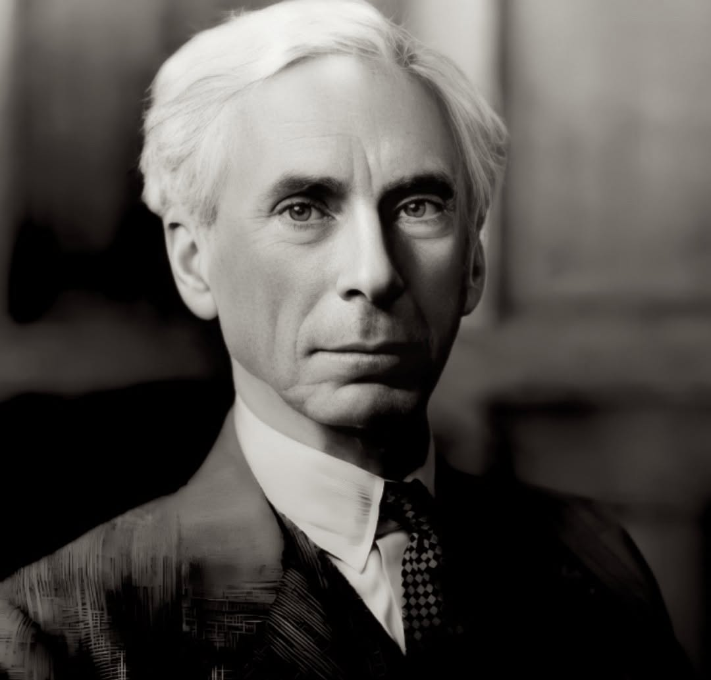

“Nevertheless the opinion of experts, when it is unanimous, must be accepted by non-experts as more likely to be right than the opposite opinion.”
“The opinions that are held with passion are always those for which no good ground exists; indeed the passion is the measure of the holder's lack of rational conviction.”
Why should we trust the “experts“? — Bertrand Russell (1928)
“Even when the experts all agree, they may well be mistaken. Albert Einstein’s view as to the magnitude of the deflection of light by gravitation would have been rejected by all experts not many years ago, yet it proved to be right. Nevertheless the opinion of experts, when it is unanimous, must be accepted by non-experts as more likely to be right than the opposite opinion.
The scepticism that I advocate amounts only to this: (1) that when the experts are agreed, the opposite opinion cannot be held to be certain; (2) that when they are not agreed, no opinion can be regarded as certain by a non-expert; and (3) that when they all hold that no sufficient grounds for a positive opinion exist, the ordinary man would do well to suspend his judgment.
These propositions may seem mild, yet, if accepted, they would absolutely revolutionize human life. The opinions for which people are willing to fight and persecute all belong to one of the three classes which this scepticism condemns. When there are rational grounds for an opinion, people are content to set them forth and wait for them to operate. In such cases, people do not hold their opinions with passion; they hold them calmly, and set forth their reasons quietly. The opinions that are held with passion are always those for which no good ground exists; indeed the passion is the measure of the holder’s lack of rational conviction. Opinions in politics and religion are almost always held passionately.”
— Bertrand Russell, Sceptical Essays (1928), Introduction: On the Value of Scepticism, p. 12
━━
Background: Sceptical Essays (1928) by Bertrand Russell
"These propositions may seem mild and unadorned, yet, if accepted, they would absolutely revolutionize human life."
With these words Bertrand Russell introduces what many have found a revolutionary book (Sceptical Essays 1928). Taking as his starting-point the irrationality of the world, Russell offers by contrast something 'wildly paradoxical and subversive' - the position that reason should determine human actions instead of the dogma and superstition often found in religious and political beliefs. In his clear, engaging prose, Russell guides the reader through the many key philosophical issues that affect our daily lives - freedom, happiness, emotions, ethics and beliefs - and offers his characteristic no-nonsense advice.
Image: Bertrand Russell (23 October 1936) National Portrait Gallery, London, United Kingdom.
